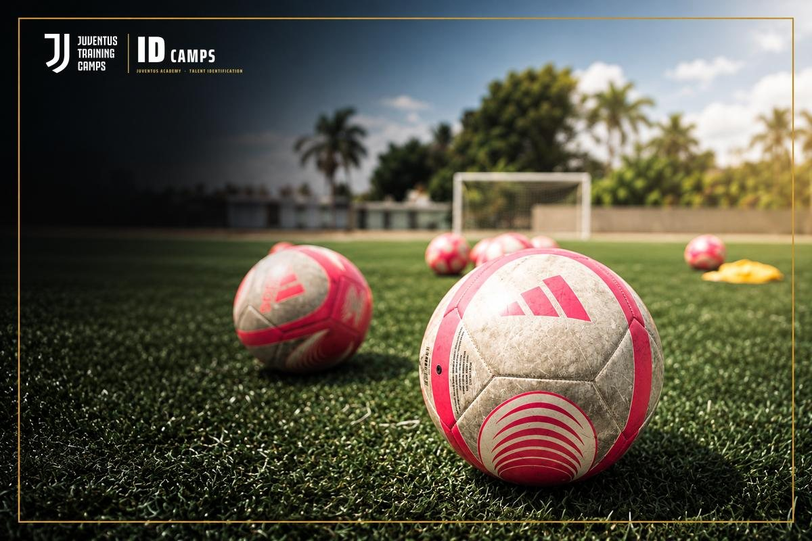

|
Hola María, Antes de terminar la inscripción, muchas familias nos hacen las mismas preguntas. Aquí van las respuestas. ¿Tiene que jugar en un club? No. El ID Camp es para jugadores de todos los niveles que tengan ganas de entrenar y ser evaluados por los entrenadores de Juventus Academy. ¿Para qué edades es? Para niños y niñas de 6 a 16 años, jugadores y porteros. Se entrena en grupos por edad. ¿Cuántos jugadores hay por grupo? Los grupos son pequeños: un entrenador por cada 12 a 15 jugadores, para que cada uno reciba atención individual. ¿Qué debe llevar? Zapatos de fútbol (tacos), espinilleras, su botella de agua, protector solar y snacks saludables. La camiseta oficial de entrenamiento de Juventus Academy está incluida.  ¿Qué pasa si se destaca? Queda anotado para futuras oportunidades de Juventus Academy, como entrenar todo el año en una sede de la Academy o la Juventus Training Experience en Italia. ¿Cuándo y dónde es? Estos son los datos: 📅 Sábado 21 y domingo 22 de noviembre · 9 AM a 1 PM
📍 Soccer Spectrum, 1251 Digital Dr., Richardson, TX
⚽ Niños y niñas de 6 a 16 años, jugadores y porteros |
Toda la información del camp está también en la página del ID Camp de Dallas.
|